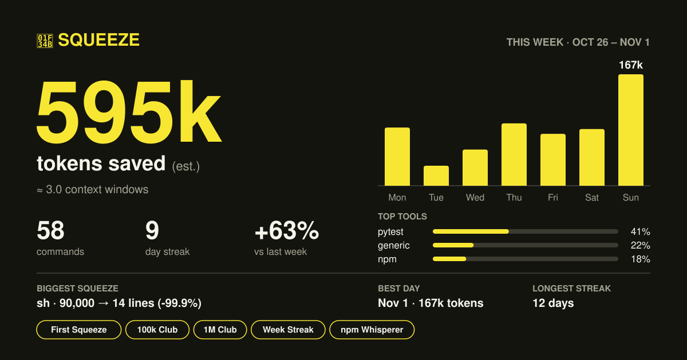

Your agent doesn't
need the whole log.
Squeeze wraps the noisy commands your coding agent runs. It keeps the failures and the exit code, saves the full log to disk, and drops the rest.
pipx install git+https://github.com/ryanjmahn/squeeze
Scroll to squeeze.
This is real tool output. Keep scrolling, and watch what happens to it.
Three steps, then forget about it.
Test output and install spam fill the context window, so your agent burns tokens and forgets earlier work sooner. Piping to tail saves tokens, but it can cut off the actual error.
- 01
pipx install git+…/squeeze
Puts
sqon yourPATHeverywhere, which is what an agent needs. - 02
sq init >> CLAUDE.md
Adds a short note telling your agent to run noisy commands through
sq. - 03
sq pytest
Prints the summary and the failures. If that isn't enough, the agent reads the saved log instead of running the command again.
Squeezers per tool
pytest, jest, vitest, npm, pnpm, yarn, pip, uv pip, and tsc, each tested on what they really print.
A fallback for the rest
Any other command keeps its first and last lines, and every line that looks like an error or warning.
Short output stays short
When there's nothing to hide, you get a one-line header and the output.
Pipes and raw mode
sq -s "cd api && pytest" runs shell strings. sq --raw shows normal output live and still saves the log.
The weak ones are in here too.
~3.2k → ~44
Estimated tokens for pytest -v on a real project, all passing.
| Run | Tokens | What's left |
|---|---|---|
pytest -v, all passing, a real project | ~3.2k → ~44 | |
pytest -v, all passing | ~1.3k → ~38 | |
jest, all passing, noisy logs | ~737 → ~42 | |
pip install flask | ~409 → ~46 | |
pytest -v, 7 failures | ~3.0k → ~496 | |
jest --verbose, 5 failures | ~1.4k → ~402 | |
tsc --pretty, 8 errors | ~616 → ~220 | |
vitest run, 5 failures | ~776 → ~420 | |
npm install | ~64 → ~53 |
Squeezing never hides a failure.
The exit code is exact
If
pytestexits 1,sq pytestexits 1.A confused squeezer gives up
If it crashes or counts different failures than the tool reported, a blunter squeezer takes over, and then the raw output.
A ✓ means exit 0
A coverage threshold that fails a run where every test passed shows the reason, never a ✓.
Unknown lines stay
Install squeezers drop known noise, so a format they've never seen still gets shown.
Log squeezes like workouts.
Tokens saved, streaks, personal records, and badges in your terminal. sq card makes a card like this one for your GitHub profile.

Questions
Could it hide the error my agent needs?
It's built not to: exit codes pass through, failure counts are checked against the tool's own totals, and the full log is always saved. If a summary falls short, the agent can read the log or use sq --raw.
What does it store?
~/.squeeze/history.jsonl holds command names, the repo's folder name, and numbers, never arguments or output. Logs hold the full output, including any secrets a command prints, so they stay in a gitignored .squeeze/ folder. Nothing is uploaded.
Does it work with agents other than Claude Code?
sq is an ordinary command, so any agent that can run shell commands can use it. sq init prints the instructions, which you can paste wherever your agent reads them. It's mainly been tried with Claude Code so far.
Will it save tokens on every command?
No. It saves the most on noisy test runs and installs. Short commands add a one-line header, so they can cost a few tokens.
Are the token counts exact?
No, they're estimates: characters divided by 4. Real token counting is on the roadmap.
Start squeezing.
pipx install git+https://github.com/ryanjmahn/squeeze